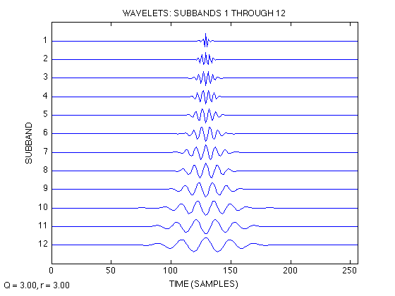
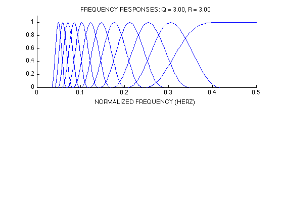

Demo1: Tunable Q-factor wavelet transform (TQWT)
Ivan Selesnick, Polytechnic Institute of New York University, November 2010.
Contents
Set parameters
clear addpath frequency_response_functions % Uncomment one of the following two lines: Q = 3; r = 3; J = 12; % High Q-factor wavelet transform % Q = 1; r = 3; J = 7; % Low Q-factor wavelet transform
Verify PR property of wavelet transform
Verify perfect reconstruction property
N = 200; x = rand(1,N); % Make test signal w = tqwt_radix2(x,Q,r,J); % TQWT y = itqwt_radix2(w,Q,r,N); % Inverse TQWT recon_err = max(abs(x - y)); % Reconstruction error fprintf('Reconstruction error: %e\n', recon_err)
Reconstruction error: 5.551115e-16
Verify Parseval's energy identity
The energy in the wavelet domain equals the signal energy.
E = sum(x.^2); % Energy of signal Ew = 0; % Energy in wavelet domain for j = 1:J+1 Ew = Ew + sum(w{j}.^2); end fprintf('(Signal energy) - (Wavelet energy) = %e\n', E - Ew)
(Signal energy) - (Wavelet energy) = -2.842171e-14
Plot wavelet at multiple subbands
Display the wavelets for the first several subbands.
J1 = 1; J2 = J; figure(1), clf PlotWavelets(2^8,Q,r,J1,J2,'radix2'); orient tall print('-dpdf',sprintf('figures/demo1_radix2_Q%d_fig%d',Q,gcf))
Plot frequency response of the TQWT
figure(2), clf subplot(2,1,1) PlotFreqResps(Q, r, J) print('-dpdf',sprintf('figures/demo1_radix2_Q%d_fig%d',Q,gcf))